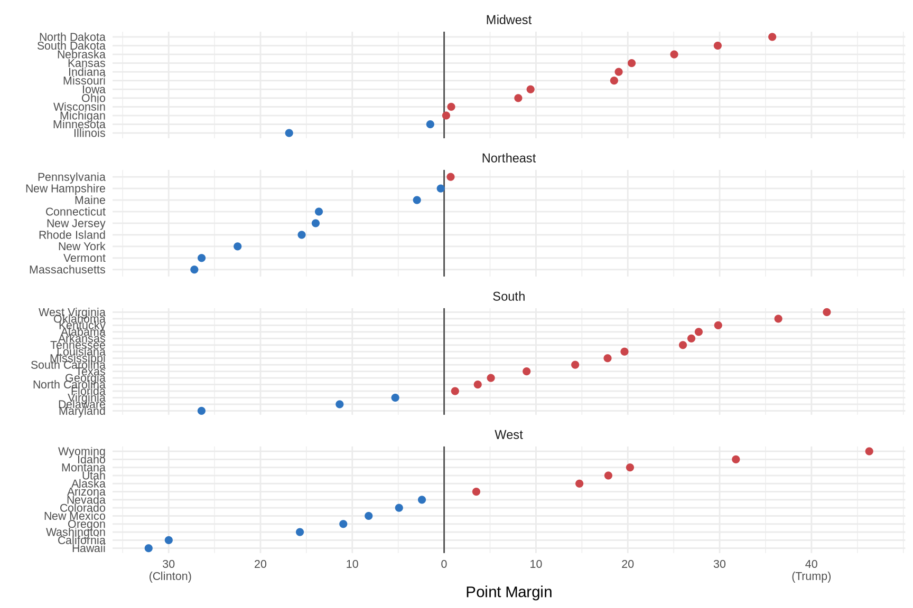
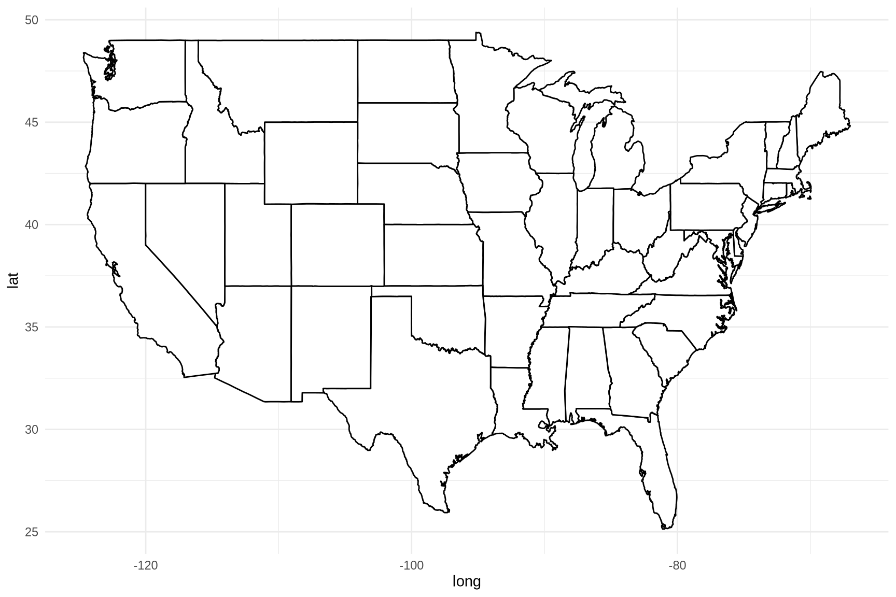
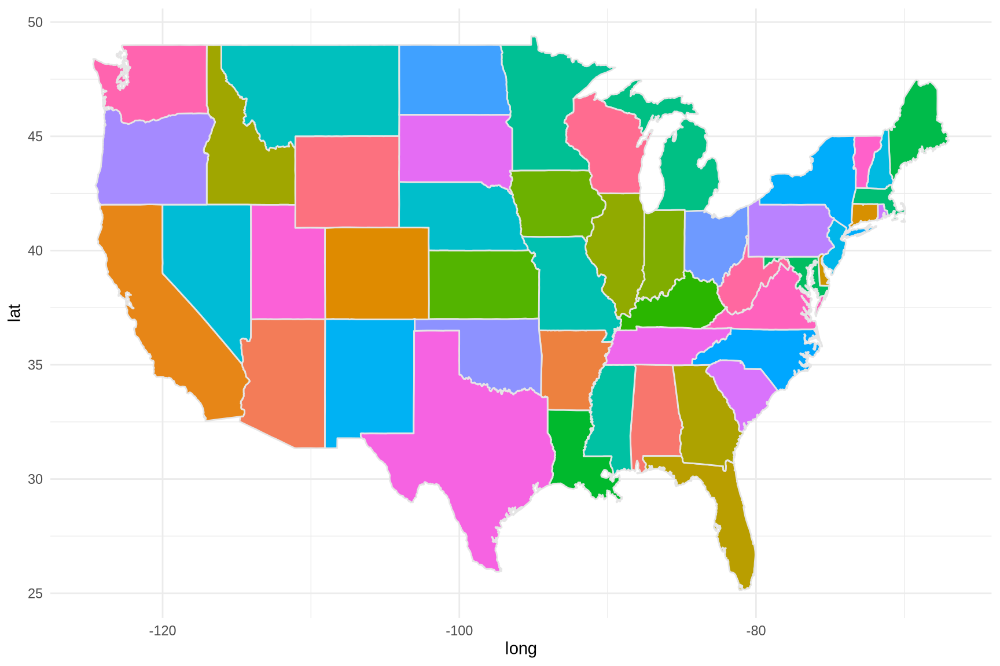
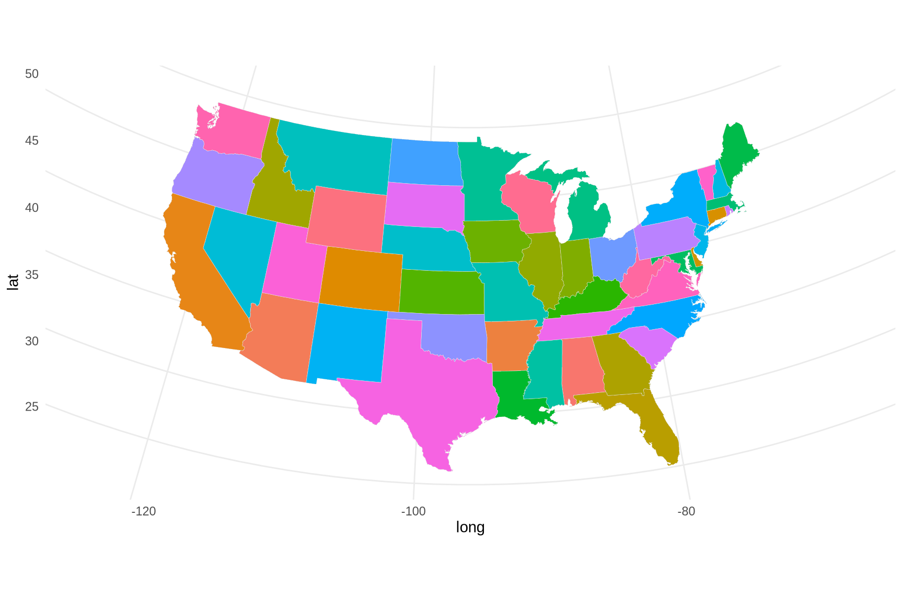
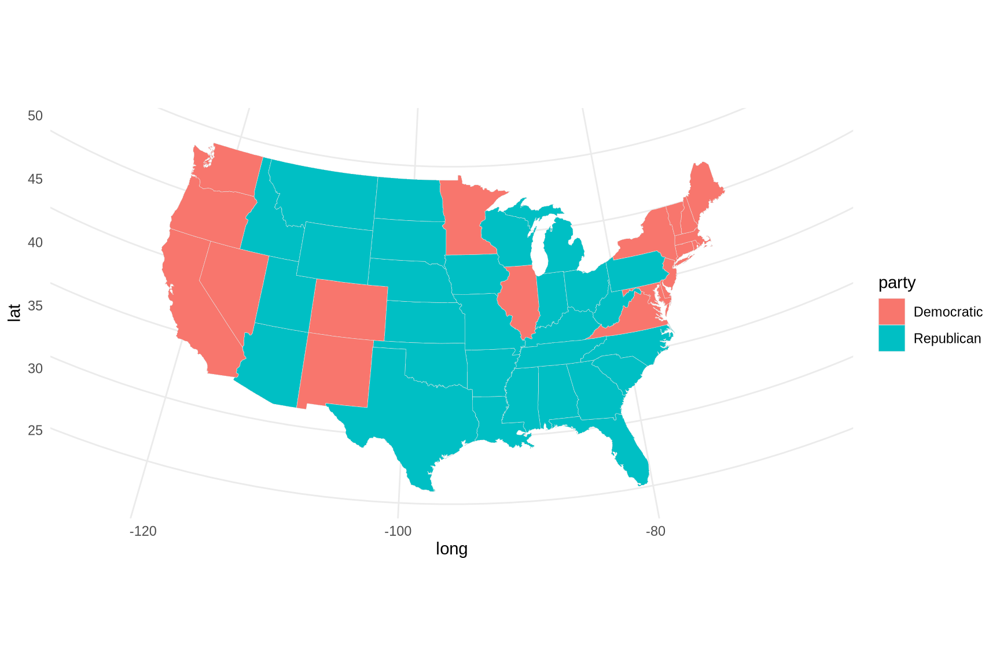
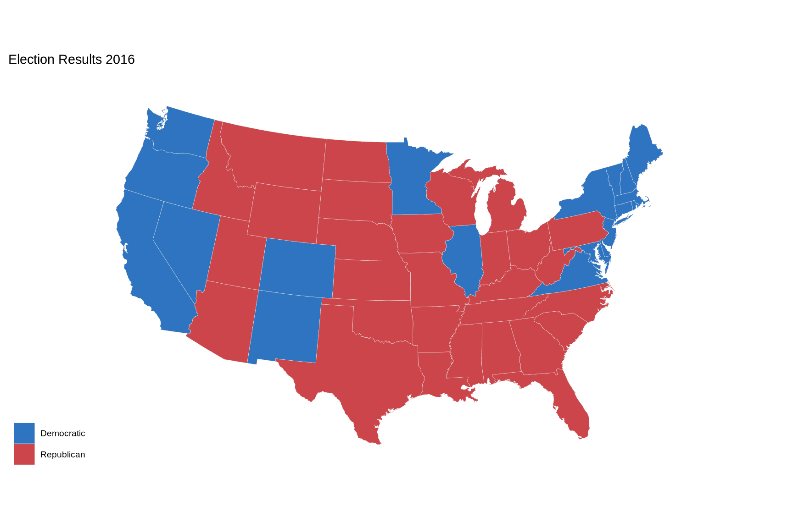
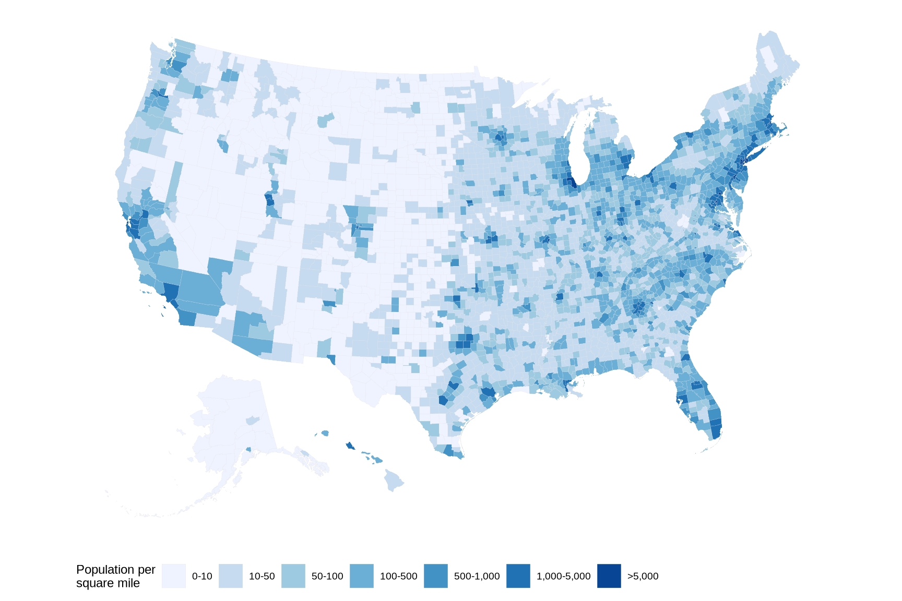

Code
library(tidyverse)
library(socviz)
library(maps)
library(ggthemes)library(tidyverse)
library(socviz)
library(maps)
library(ggthemes)theme_set(theme_minimal())election data from the socviz packageK. Healy’s socviz package provides us with the election dataset. The dataset contains various measures of the vote and vote shares by state. FYI: Kieran Healy is a sociologist at Duke University, and the author of the book “Data Visualization: A Practical Introduction”, a core reading for SMM635.
election# A tibble: 51 × 22
state st fips total_vote vote_margin winner party pct_margin r_points
<chr> <chr> <dbl> <dbl> <dbl> <chr> <chr> <dbl> <dbl>
1 Alabama AL 1 2123372 588708 Trump Repu… 0.277 27.7
2 Alaska AK 2 318608 46933 Trump Repu… 0.147 14.7
3 Arizona AZ 4 2604657 91234 Trump Repu… 0.035 3.5
4 Arkansas AR 5 1130635 304378 Trump Repu… 0.269 26.9
5 Californ… CA 6 14237893 4269978 Clint… Demo… 0.300 -30.0
6 Colorado CO 8 2780247 136386 Clint… Demo… 0.0491 -4.91
7 Connecti… CT 9 1644920 224357 Clint… Demo… 0.136 -13.6
8 Delaware DE 10 443814 50476 Clint… Demo… 0.114 -11.4
9 District… DC 11 311268 270107 Clint… Demo… 0.868 -86.8
10 Florida FL 12 9502747 112911 Trump Repu… 0.0119 1.19
# ℹ 41 more rows
# ℹ 13 more variables: d_points <dbl>, pct_clinton <dbl>, pct_trump <dbl>,
# pct_johnson <dbl>, pct_other <dbl>, clinton_vote <dbl>, trump_vote <dbl>,
# johnson_vote <dbl>, other_vote <dbl>, ev_dem <dbl>, ev_rep <dbl>,
# ev_oth <dbl>, census <chr>The election dataset has various measures of the vote and vote shares by state. Here we pick some columns and sample a few rows at random.
election %>%
select(state, total_vote, r_points, pct_trump, party, census) %>%
sample_n(5)# A tibble: 5 × 6
state total_vote r_points pct_trump party census
<chr> <dbl> <dbl> <dbl> <chr> <chr>
1 Arizona 2604657 3.5 48.1 Republican West
2 North Carolina 4741564 3.66 49.8 Republican South
3 South Dakota 370093 29.8 61.5 Republican Midwest
4 Ohio 5536547 8.07 51.3 Republican Midwest
5 Maryland 2781446 -26.4 33.9 Democratic South # Hex color codes for Dem Blue and Rep Red
party_colors <- c("#2E74C0", "#CB454A")
p0 <- ggplot(data = subset(election, st %nin% "DC"), mapping = aes(x = r_points, y = reorder(state, r_points), color = party))
p1 <- p0 + geom_vline(xintercept = 0, color = "gray30") + geom_point(size = 2)
p2 <- p1 + scale_color_manual(values = party_colors)
p3 <- p2 + scale_x_continuous(breaks = c(-30, -20, -10, 0, 10, 20, 30, 40), labels = c("30\n (Clinton)", "20", "10", "0", "10", "20", "30", "40\n(Trump)"))
p3 + facet_wrap(~census, ncol = 1, scales = "free_y") + guides(color = 'none') + labs(x = "Point Margin", y = "") + theme(axis.text = element_text(size = 8))
The maps package provides us with cartographic data to pass as input to ggplot2’s geometric object geom_polygon. Here we load the data for the US states.
us_states <- map_data("state")
head(us_states) long lat group order region subregion
1 -87.46201 30.38968 1 1 alabama <NA>
2 -87.48493 30.37249 1 2 alabama <NA>
3 -87.52503 30.37249 1 3 alabama <NA>
4 -87.53076 30.33239 1 4 alabama <NA>
5 -87.57087 30.32665 1 5 alabama <NA>
6 -87.58806 30.32665 1 6 alabama <NA>dim(us_states)[1] 15537 6We can now create a map of the US states. We are not adding any data to the map, just the state boundaries.
p <- ggplot(data = us_states, mapping = aes(x = long, y = lat, group = group))
p + geom_polygon(fill = "white", color = "black")
Color-coding the states is straightforward. For illustrative purposes, we can use the state column in the us_states dataset to color the states according to their names.
p <- ggplot(data = us_states, aes(x = long, y = lat, group = group, fill = region))
p + geom_polygon(color = "gray90", linewidth = 0.5) + guides(fill = 'none')
Does this map look good? Not really. The maps library uses the Mercator projection. The Mercator projection (/mərˈkeɪtər/) is a conformal cylindrical map projection introduced by Flemish geographer and mapmaker Gerardus Mercator in 1569. Fun facts:
Let us experiment with an alterntive projection system, like Albers’. The Albers projection is a conic, equal-area map projection that uses two standard parallels. It is particularly useful for maps of the United States.
p <- ggplot(data = us_states, mapping = aes(x = long, y = lat, group = group, fill = region))
p + geom_polygon(color = "gray90", size = 0.1) + coord_map(projection = "albers", lat0 = 39, lat1 = 45) + guides(fill = 'none')
Before plotting the data, we must merge the us_states and election datasets. We can do this by joining the two datasets on the state column.
election$region <- tolower(election$state)
us_states_elec <- left_join(us_states, election)p <- ggplot(data = us_states_elec, aes(x = long, y = lat, group = group, fill = party))
p + geom_polygon(color = "gray90", size = 0.1) + coord_map(projection = "albers", lat0 = 39, lat1 = 45)
How abot polishing a bit the map? We can add a title, a subtitle, and a caption.
p0 <- ggplot(data = us_states_elec, mapping = aes(x = long, y = lat, group = group, fill = party))
p1 <- p0 + geom_polygon(color = "gray90", size = 0.1) + coord_map(projection = "albers", lat0 = 39, lat1 = 45)
p2 <- p1 + scale_fill_manual(values = party_colors) + labs(title = "Election Results 2016", fill = NULL)
p2 + theme_map()
The socviz package provides us with a ‘county-level’ dataset. The dataset contains various measures of the vote and vote shares by county.
head(county_data) id name state census_region pop_dens pop_dens4
1 0 <NA> <NA> <NA> [ 50, 100) [ 45, 118)
2 01000 1 AL South [ 50, 100) [ 45, 118)
3 01001 Autauga County AL South [ 50, 100) [ 45, 118)
4 01003 Baldwin County AL South [ 100, 500) [118,71672]
5 01005 Barbour County AL South [ 10, 50) [ 17, 45)
6 01007 Bibb County AL South [ 10, 50) [ 17, 45)
pop_dens6 pct_black pop female white black travel_time land_area
1 [ 82, 215) [10.0,15.0) 318857056 50.8 77.7 13.2 25.5 3531905.43
2 [ 82, 215) [25.0,50.0) 4849377 51.5 69.8 26.6 24.2 50645.33
3 [ 82, 215) [15.0,25.0) 55395 51.5 78.1 18.4 26.2 594.44
4 [ 82, 215) [ 5.0,10.0) 200111 51.2 87.3 9.5 25.9 1589.78
5 [ 25, 45) [25.0,50.0) 26887 46.5 50.2 47.6 24.6 884.88
6 [ 25, 45) [15.0,25.0) 22506 46.0 76.3 22.1 27.6 622.58
hh_income su_gun4 su_gun6 fips votes_dem_2016 votes_gop_2016 total_votes_2016
1 53046 <NA> <NA> 0 NA NA NA
2 43253 <NA> <NA> 1000 NA NA NA
3 53682 [11,54] [10,12) 1001 5908 18110 24661
4 50221 [11,54] [10,12) 1003 18409 72780 94090
5 32911 [ 5, 8) [ 7, 8) 1005 4848 5431 10390
6 36447 [11,54] [10,12) 1007 1874 6733 8748
per_dem_2016 per_gop_2016 diff_2016 per_dem_2012 per_gop_2012 diff_2012
1 NA NA NA NA NA NA
2 NA NA NA NA NA NA
3 0.2395685 0.7343579 12202 0.2657577 0.7263374 11012
4 0.1956531 0.7735147 54371 0.2156657 0.7738975 47443
5 0.4666025 0.5227141 583 0.5125229 0.4833755 334
6 0.2142204 0.7696616 4859 0.2621857 0.7306638 3931
winner partywinner16 winner12 partywinner12 flipped
1 <NA> <NA> <NA> <NA> <NA>
2 <NA> <NA> <NA> <NA> <NA>
3 Trump Republican Romney Republican No
4 Trump Republican Romney Republican No
5 Trump Republican Obama Democrat Yes
6 Trump Republican Romney Republican NoLike in the state-level analysis, we slice the county_map dataset to keep only the columns we are interested in.
county_data %>% select(id, name, state, pop_dens, pct_black) %>% sample_n(5) id name state pop_dens pct_black
1 19007 Appanoose County IA [ 10, 50) [ 0.0, 2.0)
2 19043 Clayton County IA [ 10, 50) [ 0.0, 2.0)
3 53029 Island County WA [ 100, 500) [ 2.0, 5.0)
4 51143 Pittsylvania County VA [ 50, 100) [15.0,25.0)
5 13177 Lee County GA [ 50, 100) [15.0,25.0)The next step is retrieving the cartographic data for the US counties.
county_map %>% sample_n(5) long lat order hole piece group id
1 -1254857.7 -858462.5 18493 FALSE 1 0500000US04015.1 04015
2 2073170.2 -247498.1 141782 FALSE 1 0500000US42101.1 42101
3 888907.5 -910556.8 19871 FALSE 1 0500000US05021.1 05021
4 1485774.9 -551544.6 131340 FALSE 1 0500000US39087.1 39087
5 900061.3 -1005891.0 154646 FALSE 2 0500000US47167.2 47167We merge the two datasets against the id column.
county_full <- left_join(county_map, county_data, by = "id")Then, we can plot the data.
p <- ggplot(data = county_full, mapping = aes(x = long, y = lat, fill = pop_dens, group = group))
p1 <- p + geom_polygon(color = "gray90", size = 0.05) + coord_equal()
p2 <- p1 + scale_fill_brewer(palette = "Blues", labels = c("0-10", "10-50", "50-100", "100-500", "500-1,000", "1,000-5,000", ">5,000"))
p2 + labs(fill = "Population per\nsquare mile") + theme_map() + guides(fill = guide_legend(nrow = 1)) + theme(legend.position = "bottom")